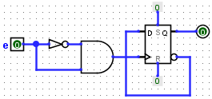
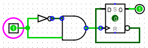
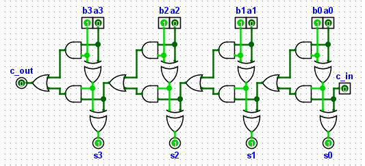

返回： 第 4 步：测试电路
第 5 步：单步模式
在某些学习场景中，或者当遇到与信号传播相关的细微问题时，能够观察这些现象非常有用。Logisim 以稍作简化的方式仿真门电路中的信号传播（所有门都具有相同的传播延迟），但仍然可以观察与传播延迟相关的主要现象。
例如，这里只给出本练习所需的按键组合；需要知道的是，每个按键组合在 | 仿真 | 菜单中都有对应的菜单项。

构建上述电路后，会发现输入 e 每次从 0 变为 1 时都会干扰 D 触发器。
要观察现象，请按如下步骤操作：将电路置于 e 为 0 的状态。然后按 Ctrl-E 禁用自动传播。点击输入 e，将其切换为 1。此时没有变化，这是正常的。然后使用组合键 Ctrl-I 单步推进。根据需要重复多次。

可以注意到某些导线端点出现蓝色圆圈，这表明在该仿真步骤中该导线的状态发生了变化。还可以观察到与门输出短暂变为 1 的情况。
这种方法还可以观察异步计数器的工作或加法器中进位的传播。

现在教程已经完成，可以通过构建自己的电路来试验 Logisim。如果想构建功能更复杂的电路，可以继续浏览帮助系统的其余部分，了解更多功能。Logisim 是一个功能强大的程序，能够构建和测试大型电路；这个分步学习过程只是入门。
返回 用户指南